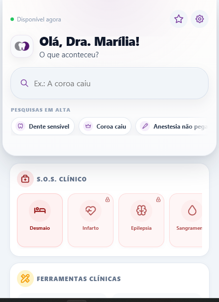

1
Dúvidas repetidas
O professor responde as mesmas perguntas básicas em diferentes boxes e turmas.
Uma camada digital de apoio clínico para ajudar alunos a chegarem mais preparados à discussão, professores a ganharem tempo na orientação e a instituição a padronizar condutas na clínica-escola.

A dor da clínica-escola
Na bancada, a dúvida não aparece como capítulo de livro. Ela aparece como caso real, com paciente esperando, professor ocupado e necessidade de decidir o próximo passo com segurança.
O professor responde as mesmas perguntas básicas em diferentes boxes e turmas.
Sem uma referência prática, cada aluno chega à discussão por um caminho diferente.
A fila de dúvidas pode atrasar atendimento, supervisão e aprendizado clínico.
Valor para a coordenação
Além de apoiar alunos e professores, o piloto ajuda a instituição a observar padrões de dúvida, reforçar protocolos e testar inovação acadêmica com baixo risco.
Apoia uma linguagem clínica comum entre alunos, professores e disciplinas.
Ajuda a entender quais temas aparecem com mais frequência na rotina da clínica.
O aluno chega mais preparado, e a discussão pode começar em um nível mais produtivo.
Uma camada digital de apoio clínico sem abrir mão da supervisão docente.
A solução
O aluno consulta a dúvida como ela aparece, organiza o raciocínio inicial e chega melhor preparado para discutir com o supervisor.
Exemplos: “coroa caiu”, “dente sensível”, “paciente desmaiou”.
Condutas rápidas, protocolos, prescrições, pacientes especiais e S.O.S. clínico.
A decisão final continua supervisionada pelo professor e pelos protocolos da instituição.
Novo fluxo acadêmico
Transformação da rotina
Ganhos acadêmicos esperados
Ajuda a transformar dúvida em pergunta clínica melhor formulada.
Reduz dúvidas repetitivas e preserva tempo para raciocínio supervisionado.
Apoia uma linguagem comum entre alunos, professores e disciplinas.
Apresenta uma camada digital de apoio sem abrir mão da governança clínica.
Protocolos e POPs
POPs e protocolos são essenciais. O desafio é fazer essa informação chegar ao aluno durante a rotina da clínica-escola, de forma prática, organizada e alinhada à orientação docente.
Essencial para padronização e consulta formal, mas nem sempre acessado durante o atendimento.
O aluno parte da situação clínica e encontra rapidamente o caminho relacionado, sempre com validação do professor.
Segurança institucional
Piloto acadêmico
A proposta é começar com um grupo controlado, acompanhar o uso, ouvir alunos e professores e decidir com base em feedback real se a ferramenta faz sentido para a rotina da clínica-escola.
Avaliação do piloto
A instituição recebe uma síntese simples do que funcionou, do que não funcionou e do que poderia ser adaptado.
Próximos passos
Alinhamento com coordenação e professores.
Escolha da turma, disciplina ou clínica.
Liberação para alunos e docentes participantes.
Síntese dos feedbacks e aprendizados para a coordenação.
Um piloto simples para avaliar, com alunos e professores, se o OdontoDex pode se tornar uma camada prática de apoio clínico, padronização e inovação na clínica-escola.
Rever proposta do piloto